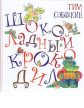

Новая книга Тима Собакина "Шоколадный Крокодил" в серии "Радуга-дуга" станет замечательным подарком маленьким читателям и их родителям, как и все книги серии. Его стихи остроумны, парадоксальны и незабываемы. И это не удивительно! Тим Собакин автор многочисленных книг, пишет стихи и рассказы для детей, публиковался в журналах "Веселые картинки", "Мурзилка", в 1990-1995 годах был главным редактором журнала "Трамвай". Рисунки в книгу нарисовал ничуть не менее известный и остроумный художник Валерий Дмитрюк. Для детей до 3-х лет.